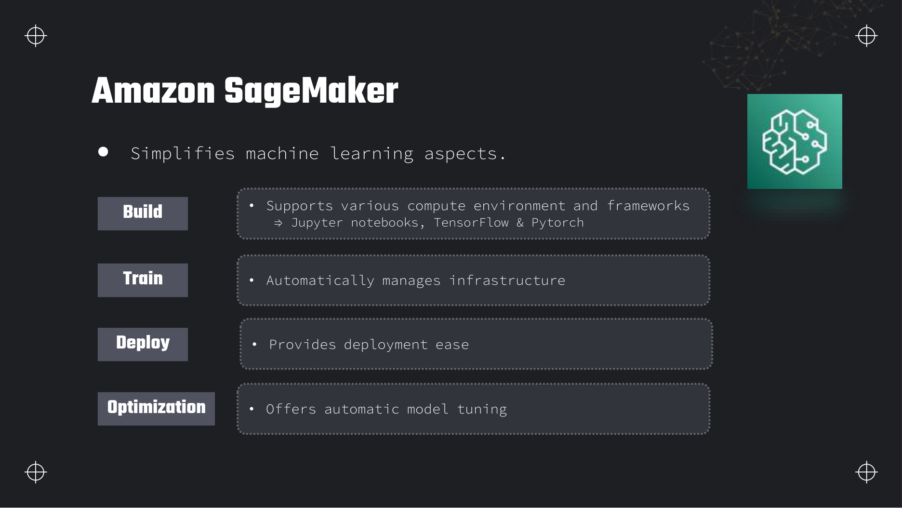
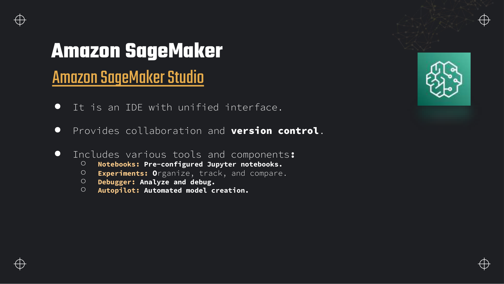
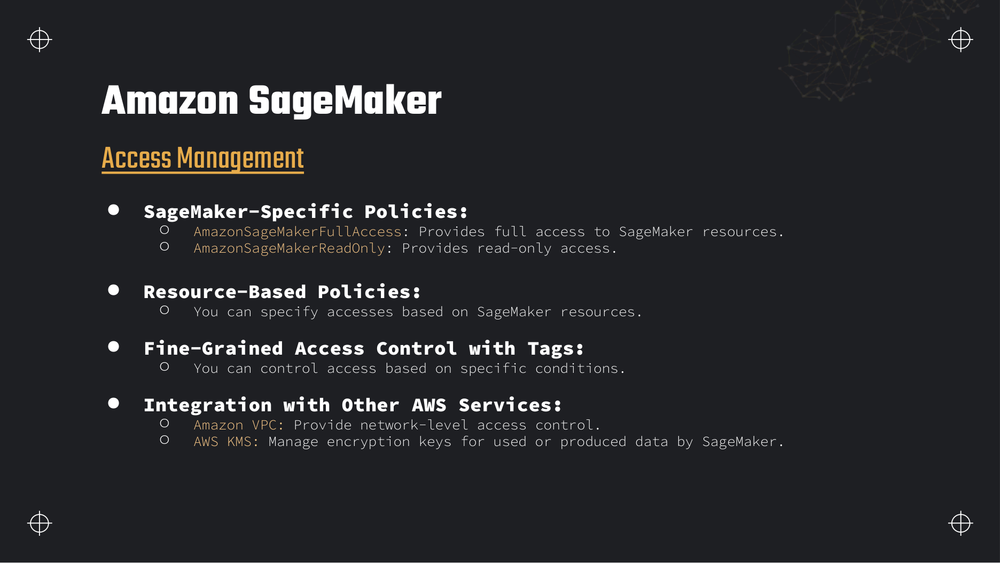
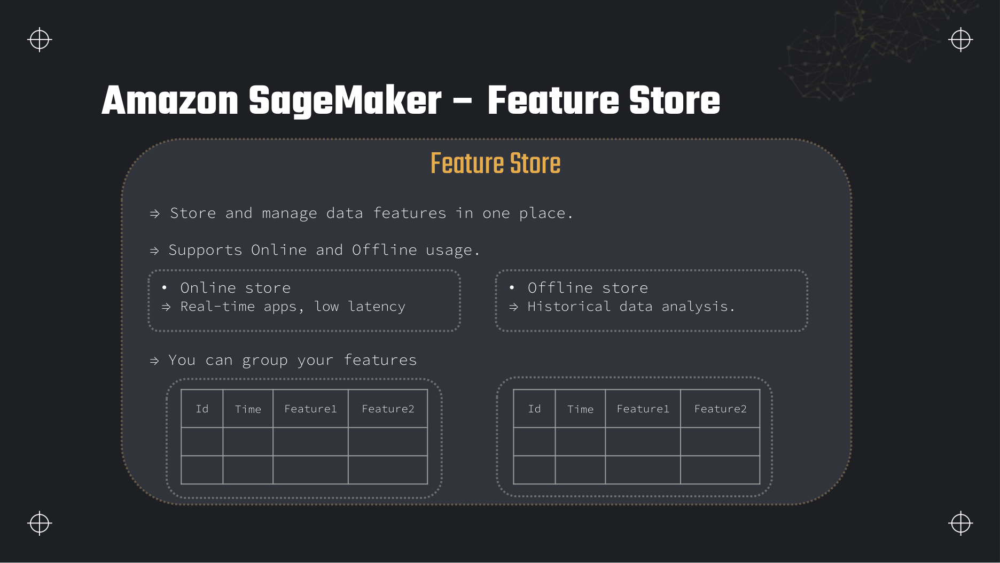
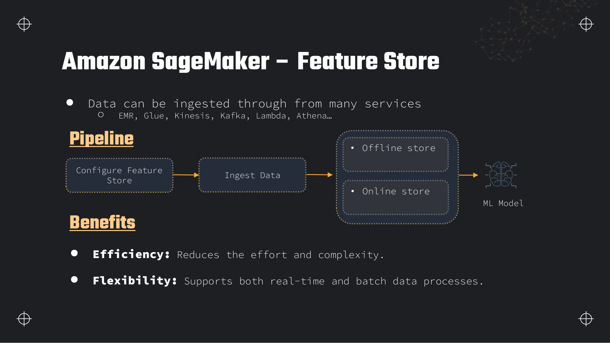
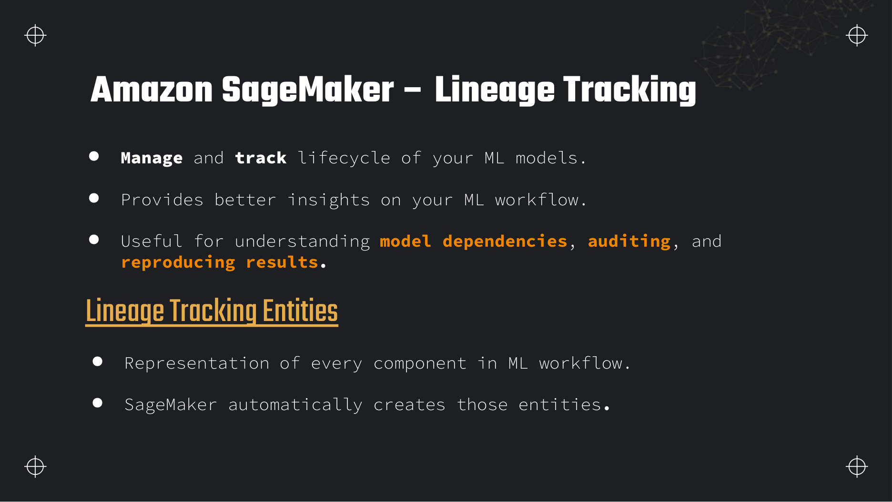
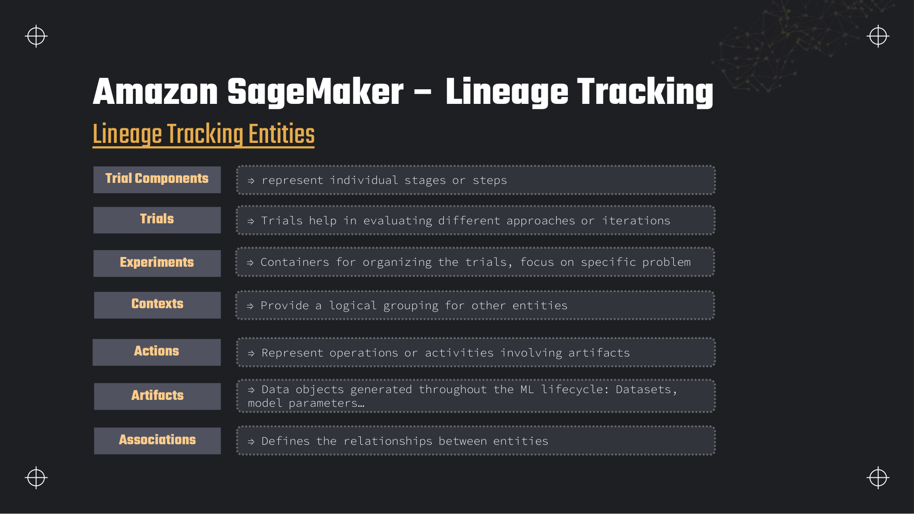
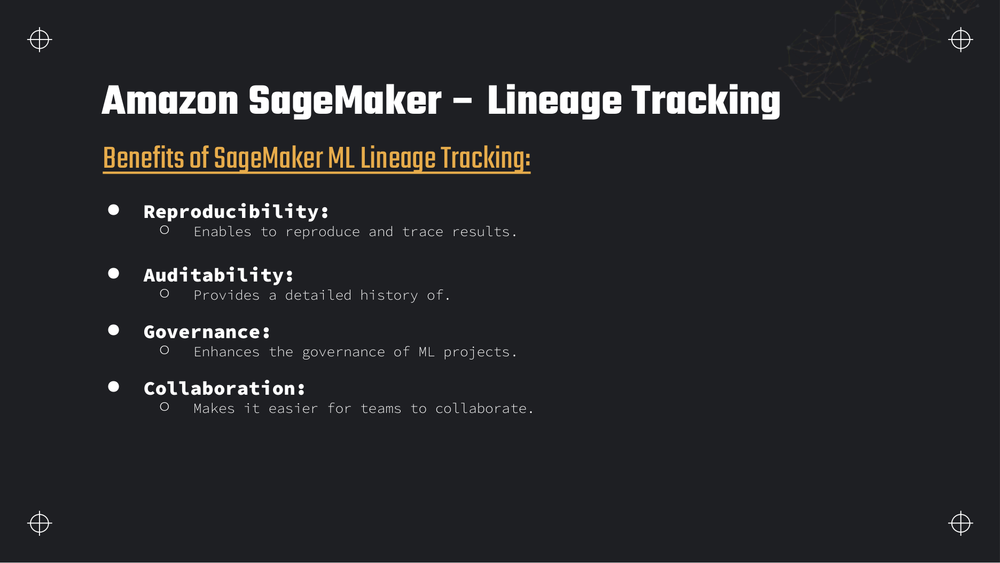
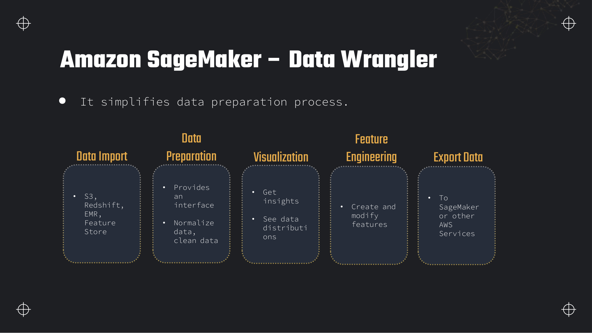
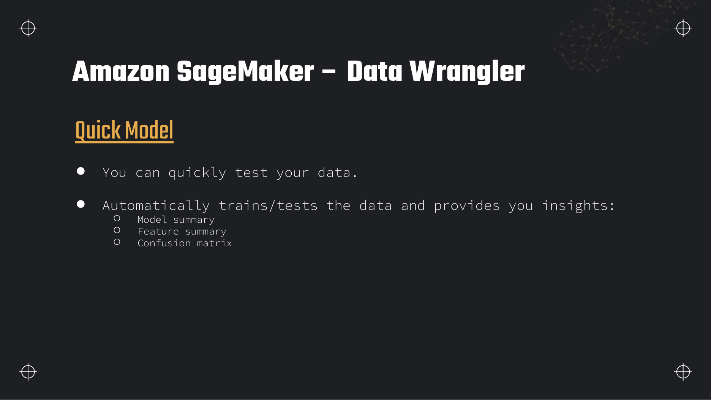

Lectures in this section
Each lecture links to the notes that cover it. The exam tests SageMaker as a data platform, not as a model-training toolkit.
- Amazon SageMaker overview ~4:00 Slides 497–498
- SageMaker Studio ~4:00 Slide 499
- Access management and security ~4:00 Slide 500
- Feature Store: online vs offline, feature groups ~8:00 Slides 501–502
- ML lineage tracking entities and benefits ~6:00 Slides 503–505
- Data Wrangler: preparation, insights and export ~7:00 Slides 506–507
- What the exam tests — and what it skips ~4:00
Amazon SageMaker overview
Amazon SageMaker is AWS's managed machine learning platform. It covers the full ML lifecycle — build, train, deploy and optimise — but as a data engineer you care about the data preparation, feature management, lineage and batch transformation pieces that feed models, not about picking algorithms or tuning hyperparameters.

- Build: Jupyter notebooks, Data Wrangler, Processing jobs, Feature Store ingestion from Glue, EMR, Kinesis and Lambda.
- Train: Managed training clusters — you need to know that training reads from S3 and Feature Store offline tables, not how to configure an estimator.
- Deploy: Real-time endpoints and batch transform; the online Feature Store serves low-latency inference features.
- Optimisation: Automatic model tuning exists but is out of exam scope for data engineers.
SageMaker Processing jobs for Spark and scikit-learn at scale
A Processing job runs a containerised script on managed instances — the SageMaker answer when transforms are too heavy for Lambda but must stay inside an ML pipeline. Use the built-in scikit-learn or Spark images for pandas/sklearn preprocessing, or bring a custom Docker image for domain-specific logic. Input and output are S3 paths under /opt/ml/processing/; the job role needs S3 and KMS access. Processing fits feature engineering before training, dataset validation, and post-training metric computation. Compared with Glue ETL, Processing wins when the consumer is SageMaker Pipelines, Feature Store, or a training job that expects SageMaker's I/O layout; Glue wins for catalog-driven Spark with job bookmarks and Data Catalog integration.
Batch transform for offline inference over S3
Batch transform runs a trained model against large input files in S3 and writes predictions to S3 — no persistent endpoint. You pay for instance-hours while the transform job runs. Use it when inference is periodic (nightly scoring of millions of rows) rather than millisecond latency. Input can be CSV, JSON Lines, or RecordIO; output lands as S3 objects partitioned for downstream Athena or Redshift loads. Batch transform pairs with Feature Store offline features: join historical features in Athena, score with batch transform, load results to the warehouse. Real-time endpoints plus the online store are the alternative when latency matters.
SageMaker Studio
SageMaker Studio is a web-based IDE — a unified interface for the entire ML workflow with built-in collaboration and Git-based version control.

Tools you will use
- Notebooks: Pre-configured JupyterLab environments with one-click compute.
- Experiments: Organise and compare training runs — ties into lineage tracking.
- Data Wrangler: Visual data preparation launched from Studio.
Tools to recognise only
- Debugger: Captures tensors during training to find vanishing gradients — ML scientist tool.
- Autopilot: Automated model creation — not a data-engineering service.
Access management

SageMaker-specific IAM policies
AmazonSageMakerFullAccess— full access to SageMaker API actions and resources.AmazonSageMakerReadOnly— list and describe only; useful for auditors and dashboard roles.
Fine-grained control
- Resource-based policies on feature groups and endpoints restrict which principals can read or write.
- Tag-based conditions in IAM policies — e.g. allow
CreateFeatureGrouponly whenEnvironment=prod. - VPC: Studio notebooks and Processing jobs can run inside a VPC with interface endpoints so data never crosses the public internet.
- KMS: Encrypt data at rest in S3 offline stores, online DynamoDB tables and EBS volumes attached to training instances.
Feature Store
Amazon SageMaker Feature Store is a central repository for ML features — engineered values derived from raw data, such as "average purchase amount in the last 30 days". It solves three data-engineering problems: training/serving skew (the same feature logic feeds both training and inference), feature reuse across teams, and point-in-time correctness (historical training rows reflect only what was known at that timestamp).

Online store vs offline store
| Store | Backing | Latency | Use case |
|---|---|---|---|
| Online store | DynamoDB (low-latency key-value) | Single-digit milliseconds | Real-time inference — fetch the latest feature vector for a customer ID at prediction time |
| Offline store | S3 in Apache Parquet, queryable via Athena or Spark | Batch / minutes | Training datasets, batch scoring, historical analysis, point-in-time joins |
When you create a feature group with both stores enabled, every ingested record is written to both automatically — one ingestion pipeline, two serving modes. That is the primary mechanism for preventing training/serving skew: the training job reads the same feature definitions the online store serves at inference.
Feature groups, record identifiers and event times
- Feature group: A named collection of features with a defined schema — like a table. You set a
RecordIdentifierFeatureName(e.g.customer_id) and anEventTimeFeatureName(e.g.event_time). - Record identifier: The entity key. All features for one customer share the same identifier.
- Event time: When the feature value was true in the real world. Point-in-time training joins use event time to avoid future leakage — you only join features whose event time is before the label's event time.

Feature pipeline: from raw data to training and inference
import boto3
import sagemaker
from sagemaker.feature_store.feature_group import FeatureGroup
session = sagemaker.Session()
role = "arn:aws:iam::123456789012:role/SageMakerFeatureStoreRole"
bucket = "dea-lab-ab-4821"
fg = FeatureGroup(
name="customer-features",
sagemaker_session=session,
record_identifier_name="customer_id",
event_time_feature_name="event_time",
)
fg.create(
s3_uri=f"s3://{bucket}/feature-store/customer-features/",
record_identifier_feature_name="customer_id",
event_time_feature_name="event_time",
enable_online_store=True,
role_arn=role,
)
fg.ingest(
data_frame=df, # columns: customer_id, event_time, avg_order_value, days_since_last_order
max_workers=2,
wait=True,
)
# Single-record update for streaming / Lambda ingestion
fg.put_record(
record=[
{"FeatureName": "customer_id", "ValueAsString": "10042"},
{"FeatureName": "event_time", "ValueAsString": "2026-08-03T12:00:00Z"},
{"FeatureName": "avg_order_value", "ValueAsString": "87.50"},
{"FeatureName": "days_since_last_order", "ValueAsString": "14"},
]
)-- Glue table auto-created: sagemaker_feature_store.customer_features_offline
SELECT
l.customer_id,
l.order_date,
l.order_total AS label,
f.avg_order_value,
f.days_since_last_order
FROM curated.orders l
JOIN sagemaker_feature_store.customer_features_offline f
ON l.customer_id = f.customer_id
AND f.event_time <= l.order_date -- point-in-time: no future leakage
AND f.event_time = (
SELECT MAX(f2.event_time)
FROM sagemaker_feature_store.customer_features_offline f2
WHERE f2.customer_id = l.customer_id
AND f2.event_time <= l.order_date
);ML lineage tracking
SageMaker ML Lineage Tracking records the provenance of every artefact in an ML workflow — which dataset produced which model, which code version ran, and who approved deployment. For data engineers it is the audit trail that answers "where did this feature come from?" and "can we reproduce last month's training set?"


Lineage entities
| Entity | What it represents |
|---|---|
| Trial components | Individual stages or steps — a Processing job, a training job, a data-validation step |
| Trials | Iterations or approaches within an experiment — "run with learning rate 0.01" |
| Experiments | Containers grouping trials around one problem — "churn prediction Q3" |
| Contexts | Logical groupings that tie entities together — a pipeline execution, a project |
| Actions | Operations performed on artifacts — "approved for production", "deployed" |
| Artifacts | Data objects — datasets in S3, model files, feature groups, metrics |
| Associations | Directed relationships — "dataset X was input to training job Y", "model Z was output of job Y" |

Data Wrangler
SageMaker Data Wrangler is a visual data-preparation tool with 300+ built-in transformations. Import from S3, Redshift, Athena or EMR; clean, join and engineer features; inspect distributions; then export the result to a Glue job, SageMaker Pipeline or notebook.


Data-quality and insights report
Data Wrangler analyses your dataset and produces an insights report: missing-value counts, outlier detection, feature correlation, target leakage warnings and data-type suggestions. This is exam-relevant because it parallels Glue Data Quality and the "ensure data quality" task statement — Wrangler is the SageMaker-side answer when the downstream consumer is a model rather than a SQL table.
Export destinations
- Glue job: Generates PySpark code you can schedule as a recurring ETL job.
- SageMaker Pipeline: Embeds the transformation as a pipeline step alongside training and deployment.
- Jupyter notebook: Exports reproducible pandas or PySpark code for interactive work.
- Feature Store: Writes engineered features directly into a feature group.
SageMaker Pipelines as ML orchestration
SageMaker Pipelines is a native ML workflow orchestrator — DAG of steps (Processing, training, transform, registration) with dependency tracking and lineage integration. Think of it as the SageMaker counterpart to Step Functions when every step is a SageMaker job type rather than arbitrary Lambda or Glue tasks. A Data Wrangler flow exports directly into a Pipeline step so interactive prep becomes scheduled production code. Pipelines record lineage artifacts automatically; use them when the scenario mentions reproducible ML pipelines with approval gates, not when the team only needs generic event routing across non-SageMaker services.
from sagemaker.processing import ScriptProcessor, ProcessingInput, ProcessingOutput
processor = ScriptProcessor(
image_uri="763104351884.dkr.ecr.us-east-1.amazonaws.com/sagemaker-scikit-learn:1.2-1-cpu-py3",
role=role,
instance_type="ml.m5.xlarge",
instance_count=1,
)
processor.run(
code="scripts/feature_transform.py",
inputs=[ProcessingInput(source=f"s3://{bucket}/raw/customers/", destination="/opt/ml/processing/input")],
outputs=[ProcessingOutput(source="/opt/ml/processing/output", destination=f"s3://{bucket}/staging/features/")],
arguments=["--date", "2026-08-03"],
)What the exam tests — and what it skips
The DEA-C01 exam treats SageMaker as infrastructure for data, not as a modelling workshop. Know the services below by purpose; do not memorise algorithm names or hyperparameter ranges.
Model Monitor and data drift detection
Model Monitor watches production endpoints (and can analyse batch transform outputs) for data drift — incoming feature distributions diverging from the training baseline — plus model quality drift when labels arrive later and bias drift over time. You define baseline statistics from a training dataset; Monitor schedules jobs that compare live traffic to those baselines and publishes violations to CloudWatch and SNS. For a data engineer this is a data-quality alarm on the inference path: the same class of problem as Glue Data Quality or pipeline row-count checks, but tied to ML feature statistics. Enable it when bad upstream data can silently degrade model accuracy without hard failures.
Ground Truth for labelling
SageMaker Ground Truth manages human labelling workflows — built-in or custom workforces label images, text, or tabular data for training sets. You pay per labelled object and optional workforce type (private, vendor, Mechanical Turk). Ground Truth is the exam answer when a scenario needs a managed labelling pipeline with quality controls (consensus, audit) feeding S3 training data — not when labels already exist in the warehouse. Lineage can record labelling jobs as trial components linking raw objects to labelled datasets.
| Service | Data-engineer purpose | Exam depth |
|---|---|---|
| Feature Store | Central feature repository; online/offline stores; point-in-time joins | High — expect architecture questions |
| Lineage Tracking | Audit trail; entity types; reproducibility | Medium — know entity names and benefits |
| Data Wrangler | Visual prep; export to Glue/Pipeline; data-quality report | Medium |
| Processing jobs | Batch transformation at scale | Medium — compare with Glue ETL |
| Model Monitor | Detect data drift in production endpoints — statistics of incoming features vs training baseline | Low–medium — know it exists and why |
| Clarify | Bias detection and explainability; can flag PII in datasets | Low — recognise name and purpose |
| Canvas | No-code ML for business users — AutoML without writing code | Low — "least technical option" distractor |
| Autopilot / Debugger / hyperparameter tuning | Model optimisation | Out of scope |
CREATE MODEL from a Redshift query — the answer is Redshift ML, not SageMaker Studio. SageMaker Feature Store is the answer when features must be shared across multiple models or served at low latency outside Redshift.Deeper detail and exam edge cases
Feature Store billing, Studio idle traps, Wrangler export economics, and where SageMaker overlaps Glue and EMR — the operational detail data engineers need when ML pipelines share the same lake as the warehouse.
Limits and quotas that decide answers
| Limit | Value | Adjustable? | Why it matters |
|---|---|---|---|
| Feature Store online store latency | Single-digit milliseconds (DynamoDB-backed) | N/A (design) | Real-time inference reads online store via GetRecord; offline store is for batch. |
| Feature group ingestion throughput | Scales with ingestion workers; large batch ingests are asynchronous | Soft — tune max_workers | Streaming via put_record vs bulk ingest — pick API for volume. |
| Record identifier + event time | Both required on every feature group | No (hard schema) | Event time enables point-in-time joins; missing event time causes training leakage. |
| Offline store format | S3 Parquet; Glue table auto-created; Iceberg supported on newer API paths | N/A | Athena-queryable offline data — same pattern as lake tables in Section 3. |
| Studio notebook instances | Billed per instance-hour while InService | Yes — stop or delete apps | Idle notebooks left running charge GPU/CPU instances continuously. |
| Data Wrangler | Billed by underlying Studio compute instance-hour | Yes — idle timeout (default 60 min) | Wrangler UI left open runs the attached instance; export does not free compute until stopped. |
| Processing / training instance quotas | Per-instance-type soft limits (e.g. ml.m5.xlarge) | Yes — Service Quotas request | Large training jobs may need quota increase before launch. |
| Spot training | Up to 90% discount vs On-Demand; interruptible | N/A (pricing) | Requires checkpointing to S3 — exam pairs Spot with checkpoint-enabled training. |
| Lineage query depth | Graph traversal via API; practical depth depends on pipeline size | N/A | Audit questions ask which entity links dataset to model — artifacts and associations. |
| Batch transform input | Large files split automatically; S3 in/out | N/A | No 29-second API limit — runs as async job, unlike real-time endpoints. |
| Feature Store online billing | Storage per GB-month + read/write request units | Right-size features | High-cardinality online features cost DynamoDB storage and read RUs at inference. |
| Offline store billing | Standard S3 storage + Athena scan if queried | Lifecycle to IA/Glacier for old snapshots | Offline is cheap storage; cost appears when Athena scans wide history. |
What you actually pay for
| Billed dimension | Unit | How to spend less |
|---|---|---|
| Studio / notebook instances | EC2 instance-hour (ml.* types) while running | Stop apps when done; use smaller instance types for exploration; delete idle domains in labs. |
| Data Wrangler | Same Studio compute instance-hour while session active | Set aggressive idle timeout; export flow to Processing job or Pipeline and shut down Wrangler. |
| Processing jobs | Instance-hour × instance count for job duration | Right-size instance type; use Spot for fault-tolerant Processing where supported. |
| Batch transform | Instance-hour for transform job | Batch large S3 inputs in one job instead of many small endpoint calls. |
| Feature Store online | DynamoDB storage GB-month + on-demand read/write requests | Store only inference-necessary features online; keep history in offline store. |
| Feature Store offline | S3 Standard (and Athena if queried) | Partition offline data by event date; lifecycle old training snapshots. |
| Training (when in scope) | Instance-hour or Spot discount with checkpointing | Spot + S3 checkpoints for long jobs; right-size GPU only when needed. |
| Real-time endpoints | Instance-hour 24×7 while endpoint InService | Prefer batch transform for offline scoring; scale-to-zero patterns need architect review. |
| Ground Truth | Per object labelled + workforce fees | Pre-filter objects; use automated labelling where confidence is high. |
| EFS (Studio home) | GB-month stored + throughput | Clean up large notebook outputs; delete unused Studio domains after labs. |
ml.m5.xlarge (or larger) bill continuously — the same pattern as forgetting an EMR cluster. Export Wrangler flows to Processing jobs or Pipelines and stop the compute app.Traps that catch people
- Online vs offline store confusion — Training jobs query offline S3/Athena; real-time endpoints need the online DynamoDB store. Enabling only offline breaks low-latency inference.
- Missing event time — Feature groups without a proper event time column allow future features into training joins — models fail silently in production.
- Idle Studio notebooks — Closing the browser tab does not stop the underlying kernel instance. Bills accrue until you shut down the app or domain.
- Data Wrangler left open — Wrangler charges the attached Studio instance until idle timeout fires. Long lunches on an ml.large add up.
- Assuming Wrangler runs pipelines for free — Export produces code; Processing jobs and Pipelines bill instance-hours when executed.
- Feature Store vs raw S3 prefix — Shared prefixes lack schema enforcement, dual-store replication, and point-in-time semantics — exam scenarios with training/serving skew want Feature Store.
- Glue vs Processing pick — "Data Catalog, crawlers, bookmarks" → Glue. "SageMaker Pipeline step, Feature Store ingest" → Processing.
- EMR vs Processing — Petabyte custom Spark with YARN tuning → EMR. ML-native container transform feeding training → Processing.
- Spot training without checkpoints — Spot interruption loses progress. Enable S3 checkpointing for jobs longer than the Spot interruption window.
- Lineage only in notebooks — Manual README provenance does not satisfy audit questions — SageMaker Lineage Tracking artifacts and associations are the managed answer.
Troubleshooting playbook
| Symptom | Most likely cause | What to check / fix |
|---|---|---|
Feature Store GetRecord empty at inference | Record not ingested to online store or wrong identifier | Verify enable_online_store=True; check DynamoDB table; confirm put_record event time and ID match query. |
| Offline Athena query returns no rows | Ingestion still running or wrong Glue database | Feature group ingestion status; table sagemaker_feature_store.<name>_offline; S3 prefix under configured URI. |
Processing job ClientError: AccessDenied on S3 | Execution role missing S3/KMS on input/output paths | IAM role on Processing job; bucket policy; KMS key policy for CMK-encrypted data. |
| Studio app stuck in Pending | Insufficient quota or VPC subnet IP exhaustion | Service Quotas for ml.* instances; VPC subnet free IPs; CloudWatch Studio logs. |
| Unexpected SageMaker bill after lab | Notebook, endpoint, or domain still running | SageMaker console → Domains → running apps; Endpoints → InService; delete domain if lab-only. |
| Batch transform output malformed | Input format mismatch (CSV vs JSON Lines) | Job definition TransformInput content type; model expects RecordIO vs CSV. |
| Model Monitor false positives | Baseline statistics stale after legitimate schema change | Regenerate baseline from current training set; adjust threshold in monitoring schedule. |
| Pipeline step fails on lineage | Missing artifact registration permissions | Execution role needs sagemaker:CreateArtifact, AddAssociation; check pipeline execution logs. |
Production patterns
Mature teams land raw data in S3 via Glue or streaming, engineer features in Processing jobs or Wrangler exports, ingest into Feature Store with both stores enabled, and train from offline Athena joins with point-in-time event filters. SageMaker Pipelines orchestrates Processing → training → model registration → optional batch transform; Lineage Tracking records artifacts for audit. Real-time paths serve from the online store; nightly scoring uses batch transform over S3 exports.
When SageMaker wins
- Shared features across models with online + offline serving.
- ML pipeline orchestration with lineage and model registry.
- Batch transform or Processing tied to training containers.
When Glue/EMR wins
- Catalog-centric ETL, crawlers, job bookmarks — Glue.
- Long-running custom Spark clusters — EMR.
- SQL-only transforms in the warehouse — Redshift ML.
Anti-pattern: using Data Wrangler as the production scheduler. Export flows to Pipelines or Glue jobs with CloudWatch alarms; interactive sessions do not retry on failure or integrate with Step Functions event triggers without extra wiring.
aws sagemaker list-apps \
--domain-id-equals $DOMAIN_ID \
--query 'Apps[?Status==`InService`].[AppName,AppType,ResourceSpec.InstanceType]' \
--output table
aws sagemaker delete-app \
--domain-id $DOMAIN_ID \
--app-type KernelGateway \
--app-name defaultWhere this fits with the rest of the exam
SageMaker is lighter weight on DEA-C01 than Glue or S3, but scenarios increasingly test feature pipelines and data quality at the ML boundary. Treat this section as the bridge between warehouse/lake engineering and model consumers.
- Section 4 — Glue DataBrew: Visual prep counterpart to Data Wrangler — pick DataBrew for catalog-centric ETL, Wrangler when export targets Pipelines or Feature Store.
- Section 13 — EMR: EMR feeds Feature Store offline ingest for large Spark feature engineering; Processing replaces EMR when jobs are ML-container-native and shorter.
- Section 15 — Step Functions: Orchestrates cross-service ETL; SageMaker Pipelines is preferable when every step is a SageMaker job type with lineage.
- Section 6 — Kinesis: Stream processors call
put_recordto keep online features fresh. - Section 16 — IAM: Execution roles for Processing, Feature Store, and Studio require
iam:PassRoleand scoped S3/KMS policies.
Interview questions
Answer each one out loud before opening it.
What problem does SageMaker Feature Store solve that a shared S3 prefix does not?Architecture
A shared S3 prefix gives you storage, not semantics. Feature Store adds a schema (feature group), dual online/offline serving, automatic replication between them, point-in-time query support via event timestamps, and IAM at the feature-group level. Without it, teams re-implement the same aggregations differently for batch training and real-time inference — training/serving skew — and cannot guarantee that a training row only sees features that existed at the label's timestamp.
Explain online store versus offline store and when each is queried.Fundamentals
The online store is a DynamoDB-backed, low-latency key-value lookup keyed by record identifier. A real-time endpoint calls GetRecord at inference time to fetch the latest feature vector for a customer. The offline store is S3 Parquet with a Glue catalog table, queried by Athena or Spark for batch training and historical analysis. Both are populated from the same ingestion API so the feature definitions stay consistent.
What is point-in-time correctness and why does event time matter in a feature group?Exam
Point-in-time correctness means a training example only joins features that were known before the label event. Without an event time, you might accidentally join a "30-day average spend" computed from future transactions — the model looks great in training and fails in production. Feature Store records carry an event time; offline queries filter feature.event_time <= label.event_time and take the latest matching row.
Name the SageMaker lineage entities and explain what an Association represents.Fundamentals
Entities: trial components, trials, experiments, contexts, actions, artifacts, and associations. An artifact is a data object (S3 dataset, model file, feature group). An action is an operation on an artifact ("approved", "deployed"). An association is a directed link — "dataset A was input to training job B" — that forms the provenance graph auditors traverse.
How does Data Wrangler differ from Glue DataBrew, and when would you export to a Glue job?Comparison
Both are visual data-preparation tools. Data Wrangler is SageMaker-native: it exports to SageMaker Pipelines, Processing jobs and Feature Store, and includes Quick Model for ML-oriented insights. DataBrew (Section 4) is catalog-centric and exports to Glue jobs by default. Choose Wrangler when the consumer is a SageMaker training pipeline; export to a Glue job when you need scheduled Spark ETL that feeds both the warehouse and Feature Store without SageMaker compute.
What is a SageMaker Processing job and how does it compare to a Glue ETL job?Comparison
A Processing job runs a containerised script (scikit-learn, Spark, custom Docker) on managed instances, reading from and writing to S3. Glue ETL runs PySpark on Glue DPUs with Data Catalog integration and job bookmarks. Processing fits ML-centric transforms (feature engineering libraries, model-specific preprocessing); Glue fits catalog-driven ETL at warehouse scale. The exam may present either — pick Processing when the scenario mentions SageMaker pipelines or Feature Store; pick Glue when it mentions crawlers, the Data Catalog or DPU pricing.
What does SageMaker Model Monitor detect, and when would you enable it?Fundamentals
Model Monitor watches production inference endpoints for data drift (feature distributions shifting from the training baseline), model quality drift (predictions degrading when ground-truth labels arrive), and bias drift. Enable it when a model serves business-critical predictions and you need automated alerts before bad data silently degrades accuracy — it is the ML equivalent of a data-quality alarm on a pipeline.
A stakeholder wants no-code ML for a sales forecast. SageMaker Canvas or Redshift ML?Design
Canvas if they need a standalone ML workflow with visual data prep, AutoML and one-click deployment — no SQL required. Redshift ML if the data already lives in Redshift and the forecast can be expressed as SQL over warehouse tables — less context-switching, no separate SageMaker bill. Canvas is the "least technical" SageMaker answer; Redshift ML is the answer when the question anchors on the warehouse.
Hands-on practice
Free tier where possible. Delete everything at the end of each task.
-
Open SageMaker Studio and launch Data Wrangler. Import
SageMaker → Studio → File → New → Data Wrangler flowdata/customers.csvfrom your lab bucket, run the data-quality insights report, apply a "remove duplicates" transform, and export the flow as a Jupyter notebook.The insights report flags the duplicate Sarah Smith row; the exported notebook contains reproducible pandas code.
Show stepsConsole
- SageMaker → Studio → Create domain if you do not have one (use default settings,
us-east-1). - Open Studio → File → New → Data Wrangler flow.
- Import → S3 →
s3://dea-lab-<initials>-<random>/raw/customers/customers.csv. - Run Get data insights — note the duplicate row count.
- Add transform → Handle missing or Drop duplicates.
- Export → Notebook. Save to your default S3 bucket.
Cleanup: delete the Studio domain if you created one for this lab only. Studio idle charges apply to the default execution role's EFS volume.
- SageMaker → Studio → Create domain if you do not have one (use default settings,
-
Create a feature group named
SageMaker → Feature Store → Create feature groupcustomer-features-labwith online and offline stores enabled. Ingest one record via the SDK, then query the offline store table in Athena.Athena returns one row with your test
customer_idand feature values from the offline Parquet files.Show stepsConsole + CLI
- Create an IAM role with
AmazonSageMakerFullAccess, S3 write to your lab bucket, and Glue catalog access. - Use the Python snippet in the Feature Store section above, substituting your bucket and role ARN.
- Wait for ingestion to complete. Find the Glue table under database
sagemaker_feature_store. - Run the Athena point-in-time query against the offline table.
Cleanup: delete the feature group (this removes the online DynamoDB table and offline S3 data).
- Create an IAM role with
-
Run a SageMaker Processing job that reads
SageMaker → Processing → Create processing jobraw/customers/customers.csv, drops duplicates in a Python script, and writes Parquet tostaging/features/.aws s3 ls s3://$BUCKET/staging/features/lists Parquet part files with 10 rows (duplicate removed).Show stepsConsole
- Write
feature_transform.pythat reads CSV from/opt/ml/processing/input, drops duplicates, writes Parquet to/opt/ml/processing/output. - Upload the script to
s3://$BUCKET/scripts/feature_transform.py. - Create a Processing job with the scikit-learn CPU image, one
ml.m5.xlargeinstance, and the input/output paths from the code block above.
Cleanup: no persistent resources beyond S3 output — delete the staging prefix if not needed.
- Write
Recap
- DEA-C01 tests SageMaker as data infrastructure — Feature Store, lineage, Wrangler, Processing — not algorithm tuning.
- Feature Store: feature groups with record ID + event time; online store (DynamoDB, low latency) vs offline store (S3 Parquet, Athena/Spark).
- Point-in-time joins use event time to prevent training leakage — the exam's reason for Feature Store over raw S3.
- Lineage entities: trial components, trials, experiments, contexts, actions, artifacts, associations.
- Data Wrangler: 300+ transforms, insights report, export to Glue job / Pipeline / notebook / Feature Store.
- Processing jobs = batch transformation in a container; compare with Glue ETL for catalog-driven Spark work.
- Model Monitor = data drift; Clarify = bias/PII; Canvas = no-code ML.
- Redshift ML (Section 10) for SQL-native training; Feature Store when features serve multiple models or real-time endpoints.